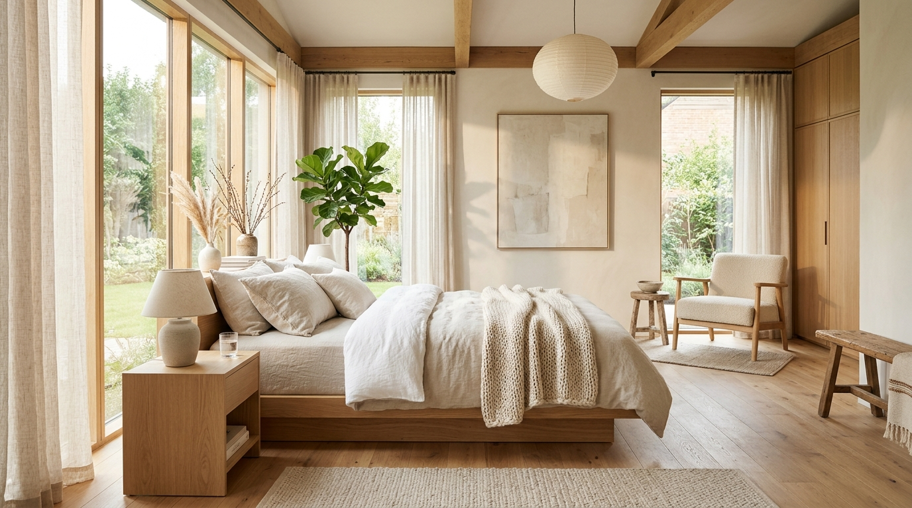

選床知識
選床的事，
選床的事，
慢慢說清楚。
從試躺技巧、尺寸準備到雙人睡眠平衡，把挑床時常遇到的困惑整理成清晰的筆記。
兩個人的床，怎麼一起選？
先讓兩個人的需求都被聽見，再找共同能接受的平衡點。
閱讀內文 →換床之前，先確認尺寸。
量的常常不只是床墊本身，更包含放得下、搬得進與起臥順暢度。
閱讀內文 →軟硬之外，還能怎麼比較？
「偏硬」或「偏軟」只是起點，真正好的床墊，在於承托與回彈的平衡。
閱讀內文 →